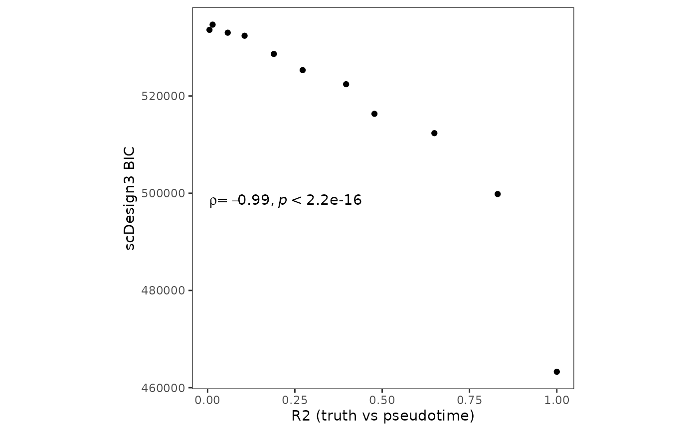

Evaluate pseudotime goodness-of-fit by scDesign3
Dongyuan Song
Bioinformatics IDP, University of California, Los Angelesdongyuansong@ucla.edu
Qingyang Wang
Department of Statistics, University of California, Los Angelesqw802@g.ucla.edu
17 July 2023
Source:../../scDesign3/code/vignettes/scDesign3-pseudotimeGOF-vignette.Rmd
scDesign3-pseudotimeGOF-vignette.Rmd
library(scDesign3)
library(dyngen)
library(SingleCellExperiment)
library(ggplot2)
library(dplyr)
theme_set(theme_bw())Introduction
In this tutorial, we will show how to use scDesign3 to evaluate the pseudotime goodness-of-fit for different pseudotime labels. If the true labels are unavailable and we have little prior knowledge, the scDesign3 BIC can serve as an unsupervised metric. In this tutorial, we will first use the R package dyngen to generate a dataset with ground truth "pseudotime". Then, we will perturb the ground truth pseudotime to worsen its quality and use scDesign3’s BIC to examine pseudotime goodness-of-fit.
Generation of reference dataset & Simulation
We will first use dyngen to generate a dataset with ground truth “pseudotime”.
set.seed(123)
backbone <- backbone_linear_simple()
config <-
initialise_model(
backbone = backbone,
num_cells = 500,
num_tfs = nrow(backbone$module_info),
num_targets = 100,
num_hks = 50,
verbose = FALSE
)
out <- generate_dataset(
config,
format = "sce",
make_plots = FALSE
)
example_sce <- out$dataset
colData(example_sce)$pseudotime <- out$model$experiment$cell_info$time Secondly, we perturb the pseudotime by generating random numbers from uniform distribution and replace various percentage of the original pseudotime by the random numbers. The percentage ranges from 0% to 100%.
set.seed(123)
example_sce_list <- lapply(0:10, function(x) {
perturb_prop <- x/10
n_cell <- round(dim(example_sce)[2]*perturb_prop)
cell_index <- sample(1:dim(example_sce)[2], n_cell)
new_pseudotime <- colData(example_sce)$pseudotime
new_pseudotime[cell_index] <- runif(n_cell)
curr_sce <- example_sce
colData(curr_sce)$pseudotime <- new_pseudotime
curr_sce
})Thirdly, we run the function scdesign3 on datasets with perturbed pseudotime.
set.seed(123)
scDesign3_result <- lapply(example_sce_list, function(x) {
res <- scdesign3(
sce = x,
assay_use = "counts",
celltype = NULL,
pseudotime = "pseudotime",
spatial = NULL,
other_covariates = NULL,
mu_formula = "s(pseudotime, bs = 'cr', k = 10)",
sigma_formula = "1",
corr_formula = "ind",
copula = "gaussian",
n_cores = 2
)
return(res)
})Visualization
After the simulation, we can plot the BIC values from our function scdesign3 vs calculated \(r^2\) between the original pseudotime and perturbed pseudotime.
bic_list <- lapply(scDesign3_result, function(x){return(x$model_bic)})
bic_df <- data.frame(matrix(unlist(bic_list), nrow = length(bic_list), byrow = TRUE))
colnames(bic_df) <- names(bic_list[[1]])
r2 <- sapply(example_sce_list, function(x){
cor(colData(example_sce_list[[1]])$pseudotime, colData(x)$pseudotime)^2
})
metric <- tibble(bic = bic_df$bic.marginal, r2 = r2, Method = paste0("perturb ",seq(0,100,by = 10), "%"))
p_pseudotime_metric <- metric %>% ggplot(aes(x = r2, y = bic,label = Method)) + geom_point() + theme_bw() + theme(aspect.ratio = 1,
panel.grid.minor = element_blank(),
panel.grid.major = element_blank()) + ggpubr::stat_cor(method = "spearman", cor.coef.name = "rho", label.x.npc = "left", label.y.npc = 0.5) + ylab("scDesign3 BIC") + xlab("R2 (truth vs pseudotime)")
p_pseudotime_metric
Session information
sessionInfo()
#> R version 4.3.0 (2023-04-21)
#> Platform: x86_64-pc-linux-gnu (64-bit)
#> Running under: Ubuntu 20.04.6 LTS
#>
#> Matrix products: default
#> BLAS: /usr/lib/x86_64-linux-gnu/openblas-pthread/libblas.so.3
#> LAPACK: /usr/lib/x86_64-linux-gnu/openblas-pthread/liblapack.so.3; LAPACK version 3.9.0
#>
#> locale:
#> [1] LC_CTYPE=en_US.UTF-8 LC_NUMERIC=C
#> [3] LC_TIME=en_US.UTF-8 LC_COLLATE=en_US.UTF-8
#> [5] LC_MONETARY=en_US.UTF-8 LC_MESSAGES=en_US.UTF-8
#> [7] LC_PAPER=en_US.UTF-8 LC_NAME=C
#> [9] LC_ADDRESS=C LC_TELEPHONE=C
#> [11] LC_MEASUREMENT=en_US.UTF-8 LC_IDENTIFICATION=C
#>
#> time zone: America/Los_Angeles
#> tzcode source: system (glibc)
#>
#> attached base packages:
#> [1] stats4 stats graphics grDevices utils datasets methods
#> [8] base
#>
#> other attached packages:
#> [1] dplyr_1.1.2 ggplot2_3.4.2
#> [3] SingleCellExperiment_1.22.0 SummarizedExperiment_1.30.2
#> [5] Biobase_2.60.0 GenomicRanges_1.52.0
#> [7] GenomeInfoDb_1.36.1 IRanges_2.34.1
#> [9] S4Vectors_0.38.1 BiocGenerics_0.46.0
#> [11] MatrixGenerics_1.12.2 matrixStats_1.0.0
#> [13] dyngen_1.0.5 scDesign3_0.99.5
#> [15] BiocStyle_2.28.0
#>
#> loaded via a namespace (and not attached):
#> [1] bitops_1.0-7 pbapply_1.7-2 gridExtra_2.3
#> [4] remotes_2.4.2 rlang_1.1.1 magrittr_2.0.3
#> [7] gamlss_5.4-12 compiler_4.3.0 mgcv_1.8-42
#> [10] systemfonts_1.0.4 vctrs_0.6.3 stringr_1.5.0
#> [13] pkgconfig_2.0.3 crayon_1.5.2 fastmap_1.1.1
#> [16] backports_1.4.1 XVector_0.40.0 labeling_0.4.2
#> [19] lmds_0.1.0 ggraph_2.1.0 utf8_1.2.3
#> [22] rmarkdown_2.23 tzdb_0.4.0 ragg_1.2.5
#> [25] purrr_1.0.1 xfun_0.39 zlibbioc_1.46.0
#> [28] cachem_1.0.8 jsonlite_1.8.7 highr_0.10
#> [31] DelayedArray_0.26.6 tweenr_2.0.2 broom_1.0.5
#> [34] irlba_2.3.5.1 parallel_4.3.0 R6_2.5.1
#> [37] bslib_0.5.0 stringi_1.7.12 car_3.1-2
#> [40] jquerylib_0.1.4 Rcpp_1.0.11 bookdown_0.34
#> [43] assertthat_0.2.1 knitr_1.43 readr_2.1.4
#> [46] dynutils_1.0.11 Matrix_1.6-0 splines_4.3.0
#> [49] igraph_1.5.0 tidyselect_1.2.0 abind_1.4-5
#> [52] yaml_2.3.7 viridis_0.6.3 gamlss.dist_6.0-5
#> [55] codetools_0.2-19 lattice_0.21-8 tibble_3.2.1
#> [58] withr_2.5.0 evaluate_0.21 desc_1.4.2
#> [61] survival_3.5-5 RcppParallel_5.1.7 polyclip_1.10-4
#> [64] mclust_6.0.0 ggpubr_0.6.0 pillar_1.9.0
#> [67] BiocManager_1.30.21 carData_3.0-5 generics_0.1.3
#> [70] rprojroot_2.0.3 RCurl_1.98-1.12 hms_1.1.3
#> [73] munsell_0.5.0 scales_1.2.1 RcppXPtrUtils_0.1.2
#> [76] glue_1.6.2 proxyC_0.3.3 tools_4.3.0
#> [79] ggsignif_0.6.4 fs_1.6.2 graphlayouts_1.0.0
#> [82] tidygraph_1.2.3 GillespieSSA2_0.3.0 grid_4.3.0
#> [85] tidyr_1.3.0 colorspace_2.1-0 nlme_3.1-162
#> [88] GenomeInfoDbData_1.2.10 patchwork_1.1.2 ggforce_0.4.1
#> [91] cli_3.6.1 textshaping_0.3.6 fansi_1.0.4
#> [94] S4Arrays_1.0.4 viridisLite_0.4.2 gtable_0.3.3
#> [97] rstatix_0.7.2 sass_0.4.6 digest_0.6.33
#> [100] gamlss.data_6.0-2 ggrepel_0.9.3 farver_2.1.1
#> [103] memoise_2.0.1 htmltools_0.5.5 pkgdown_2.0.7
#> [106] lifecycle_1.0.3 MASS_7.3-60